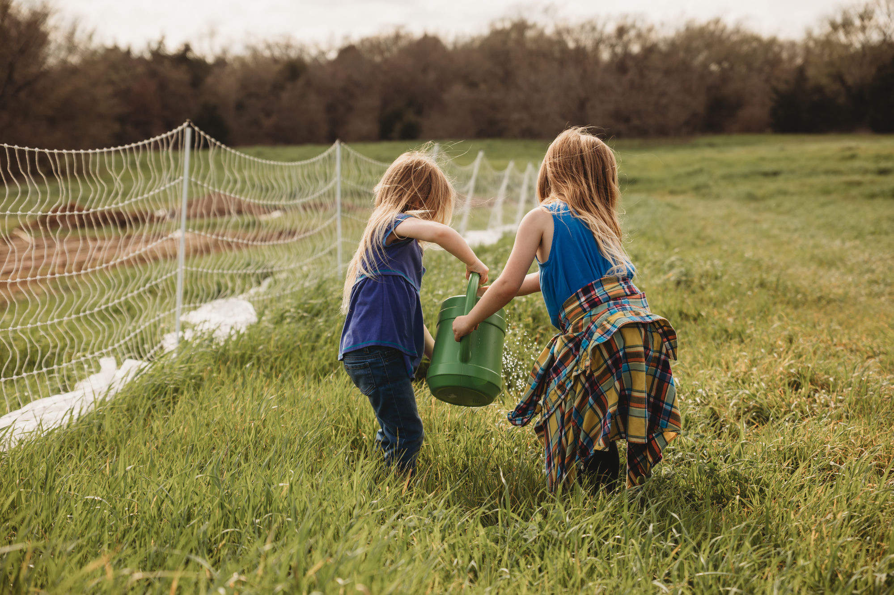
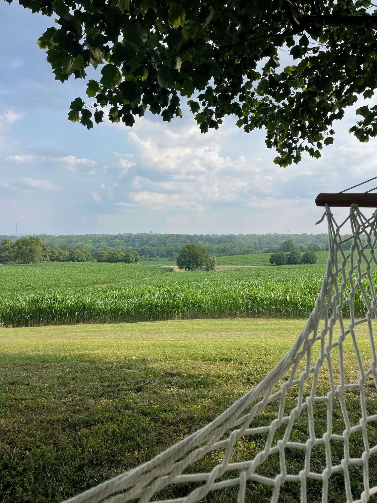
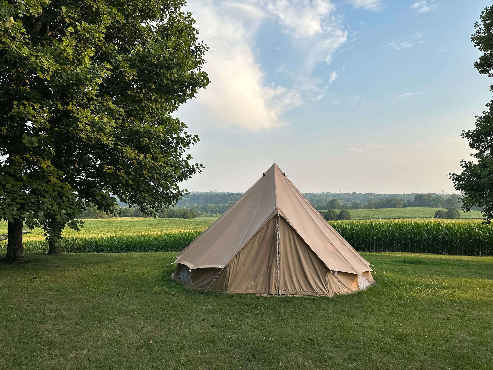
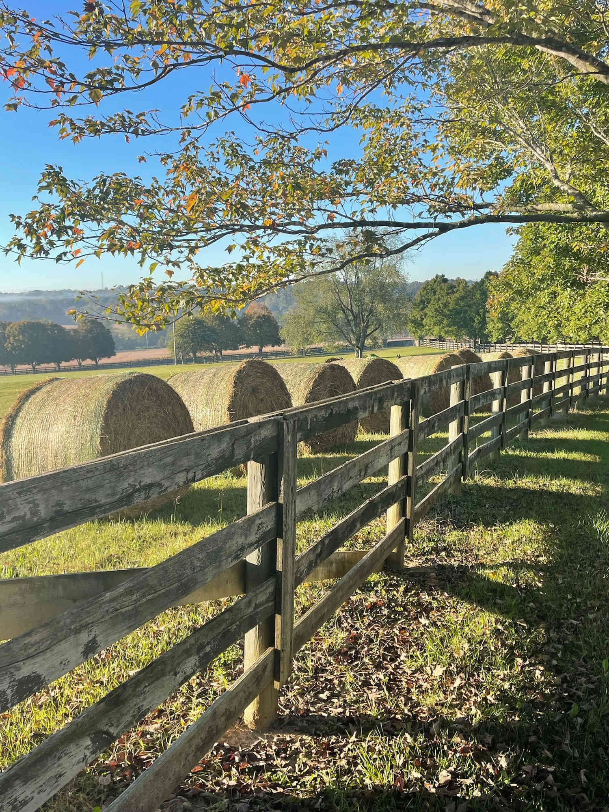
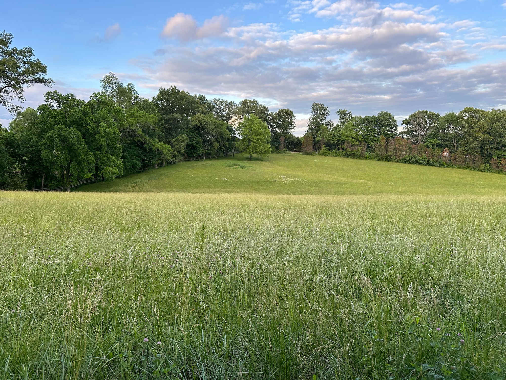

Life at Hopecote
Come See What We Mean
35 acres of rolling Tennessee farmland — and a summer your child will talk about forever.







Hands in the dirt. Eggs in the basket. Friends for life. A summer camp like nothing else in Robertson County.
May 25 – August 14, 2026 · Springfield, Tennessee · Ages 4–14
Three Programs · One Farm
Every age group has its own counselors, activities, and pace — all happening on the same land, breathing the same air, growing the same food. Pick your child's group and see exactly what their summer looks like.
"Big wonder. Small hands. The best combination."
Little Farmers explore the farm through all five senses before they ever learn a single fact. They meet the chickens gently, mush their hands in mud, stamp paint with vegetables, and listen to farm stories under a shady tree. Everything is play. Everything is real. And they absolutely love it.
"Old enough to do it for real. Young enough to still be amazed."
Junior Explorers are ready to dig deeper — literally and figuratively. They use real bug-hunting techniques, identify plants and birds with the Seek and iNaturalist apps, grow their own garden beds, observe worms in the soil, taste and identify fresh herbs, and cook with what they harvest. Their nature journals go home on Friday full of sketches, discoveries, and proof of who they're becoming.
"Old enough to lead. Young enough to fall in love with the land."
Farm Leaders take on real responsibility — and they rise to it every single time. They help run Hopecote's egg CSA, mentor Little Farmers, run biodiversity surveys with iNaturalist, bake bread from scratch, build things that stay on the farm, and design legacy projects presented to families on Celebration Day. This is the program that changes a teenager's relationship with hard work, the outdoors, and themselves.
Life at Hopecote
35 acres of rolling Tennessee farmland — and a summer your child will talk about forever.





Monday through Friday
Every day has a rhythm. And kids — even the ones who normally resist schedules — settle into it by Tuesday and love it by Friday.
What Makes This Different
There are a lot of summer camps in Middle Tennessee. Here's why Hopecote is the one parents come back to year after year.
Before we name anything, we experience it. What does soil smell like after rain? What does a caterpillar feel like? Observation before explanation builds children who actually pay attention to the world.
We don't just feed the chickens. We check in with them. We listen. We watch their body language. Our campers learn that caring for living things is a relationship — not a chore.
Birdhouses, nature journals, flower crowns, leaf prints, rock paintings, and sunflower pots — every week your child takes something home they made with their own hands, from what the land gave them. The farm is the studio.
5-4-3-2-1 grounding opens every day. Nature journaling, mindful eating, sound baths, and movement meditation are built into every week — not as add-ons, but as the fabric of how we move through the farm.
1:6 for our littlest farmers. 1:8 for Junior Explorers. 1:10 for Farm Leaders. Your child is never lost in a crowd. Every counselor knows every child's name, their curiosity, and what makes them light up.
Hopecote isn't a theme park version of farming. It's a real farm in Springfield, Tennessee, with real animals, real garden beds, real weather, and real consequences. That's exactly what makes it matter.
What We Promise Parents
Honest answers to the things parents always want to know before they commit.
"My child is nervous around animals. Is that okay?"
Completely normal — and honestly, one of the most beautiful transformations we watch happen. No child is ever required to interact before they're ready. By Friday of Week 1, most nervous kids are leading the morning feeding.
— From our counselor team"What will my child actually take home?"
A planted pot with their name on it. A nature journal full of real sketches. A handmade craft each week. Preserved food they made themselves. And skills — how to observe, how to grow, how to care for something living.
— Part of every week's curriculum"How does this compare to screen time at home?"
There are no screens at Hopecote. Just dirt, sunlight, curious counselors, good books, and the kind of slow-moving wonder that restores a child's attention span better than anything else we know of.
— Amy Green, Camp Director"My teenager thinks camp is 'for little kids.' Will Farm Leaders work?"
Farm Leaders is for teenagers who are ready to be taken seriously. They help run Hopecote's egg CSA, mentor younger campers, lead biodiversity surveys, bake and cook from scratch, and build things that stay on the farm permanently. It is not babyish. It is the opposite.
— Amy Green, Camp DirectorSimple, Honest Pricing
One weekly rate covers every activity, all supplies, farm-sourced snacks, and a take-home piece every Friday. Choose any week — or all of them.
Pick the weeks that work for your family. No multi-week commitment required to start.
Week three is automatically half price. Our most popular option for families planning ahead.
Four 3-week bundles applied back-to-back. Guaranteed enrollment through August 14.
📋 A weekly supply list — including what to pack and what to wear — will be sent to all registered families before their first week begins.
Every additional child in your family is 50% off, every week. First child pays full price — everyone after is half. Enter FARMFAM at checkout.
Registration fills on a first-come, first-served basis. Choose your weeks, use FARMFAM if you have siblings, and give your child a summer that actually means something.
Registration takes about 10 minutes. Confirmation and welcome packet arrive within 24 hours. $100 non-refundable deposit holds your spot; balance due 15 days before your first week.